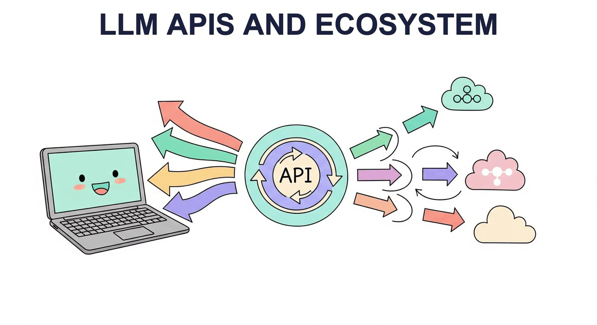

"The best interface is the one that disappears."
Pip, Invisibly Helpful AI Agent
Part II ended with you understanding LLMs from the inside. Part III turns to using them from the outside. The starting point is the simplest possible interface: an API call. This chapter covers how the major providers expose their models (OpenAI, Anthropic, Google), the patterns they share (chat completions, function calling, streaming, structured output), and the patterns that distinguish them. By the end you can swap providers in an afternoon.
Chapter Overview
Large language models are only as useful as the interface through which you access them. For the vast majority of production applications, that interface is an API: a set of HTTP endpoints exposed by OpenAI, Anthropic, Google, or an open-source serving framework. Knowing how to call these APIs correctly, efficiently, and reliably is a core skill for any engineer building with LLMs.
This chapter covers the full lifecycle of working with LLM APIs. We begin with the landscape of providers and their architectural differences, then move into structured output techniques and tool integration patterns that let models interact with external systems (a prerequisite for building AI agents). Finally, we tackle the engineering challenges of running LLM calls in production: routing across providers, caching, retry strategies, circuit breakers, cost management, and observability.
For most practitioners, LLM APIs are the primary interface to model capabilities. This chapter teaches you to work with chat completions, manage rate limits, handle errors gracefully, and optimize costs. These API patterns form the backbone of every application built in Parts V and VI.
- Call the Chat Completions API (OpenAI), Messages API (Anthropic), and Gemini API (Google) with correct parameter usage
- Implement streaming responses using Server-Sent Events and understand when streaming is appropriate
- Use function calling and tool use to connect LLMs to external systems, a foundation for AI agents
- Enforce structured output with JSON mode, response schemas, and validation libraries like Instructor and Pydantic, building the foundation for production information extraction
- Build provider-agnostic LLM clients using abstraction layers such as LiteLLM, enabling flexible hybrid ML and LLM pipelines
- Implement production-grade error handling with retry logic, circuit breakers, and graceful degradation, essential for production safety
- Design caching strategies (semantic caching, prompt caching) to reduce cost and latency, complementing inference optimization techniques
- Set up token budget enforcement, cost tracking, and observability using AI gateways
Prerequisites
- Chapter 4: Decoding Strategies and Text Generation (understanding of temperature, top-p, and generation parameters)
- Chapter 9: Inference Optimization and Efficient Serving (context for why APIs are structured as they are)
- basic familiarity with Python, HTTP requests, and JSON
- API keys for at least one provider (OpenAI, Anthropic, or Google) for hands-on labs
Sections
- 11.1 API Landscape & Architecture A team at a fintech startup shipped their first LLM feature using the OpenAI API. Entry
- 11.2 Structured Output & Tool Integration Why structured output matters: LLMs generate free-form text by default, but production applications need predictable, parseable data. Intermediate
- 11.3 API Engineering Best Practices From prototype to production: Calling an LLM API in a notebook is straightforward. Advanced
- 11.4 Reasoning Models & Multimodal APIs Reasoning models and multimodal APIs represent the two most significant expansions of what LLM APIs can do. Advanced
What's Next?
Next: Chapter 12: Prompt Engineering & Advanced Techniques. The SDK call is the easy part; getting useful output from it is not. Chapter 12 covers what to put inside that prompt string: few-shot demonstrations, chain-of-thought, self-consistency, prompt-injection-resistant templates, and the structured-output tricks that turn "vibes-based prompting" into a repeatable engineering practice.